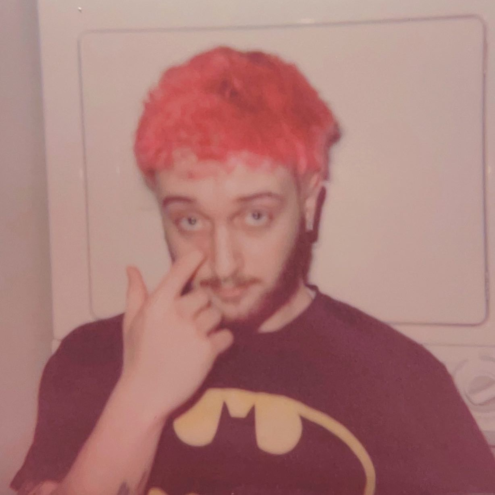

I am a 21-year-old student majoring in Graphic Communications and Creative Technologies at Illinois State University. I am based in central Illinois. I currently am a Graphic Designer for University Housing Services at ISU. I have created art my whole life and fully pursue it. Now-a-days my art is mainly digital, although I have experience with traditional mediums. I draw inspiration from various forms of mediums, such as films and music, as well as the world around me.